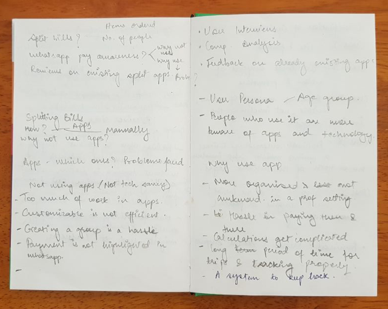
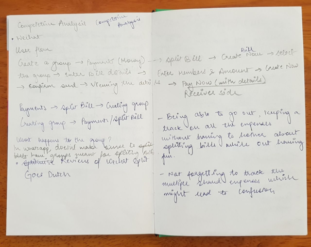
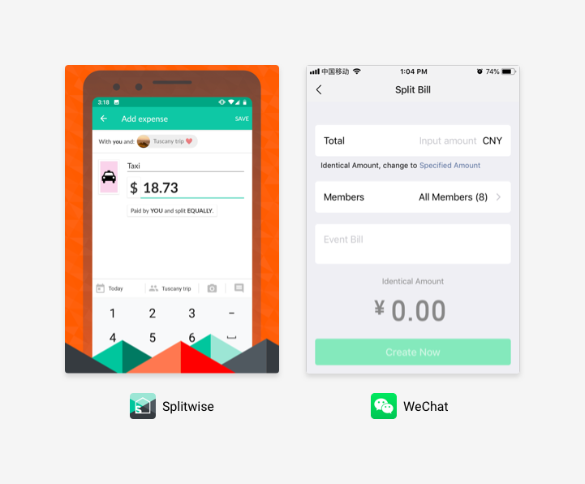
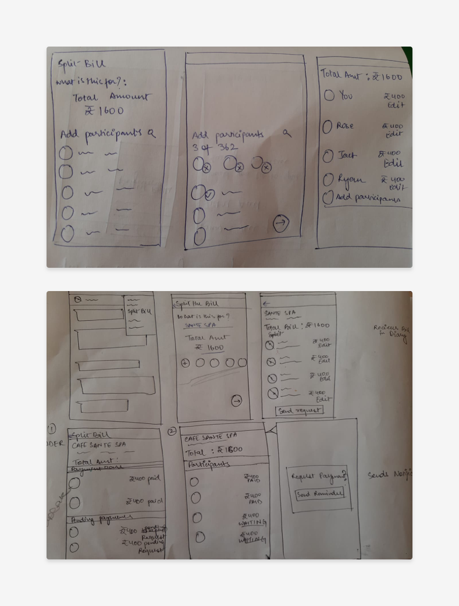
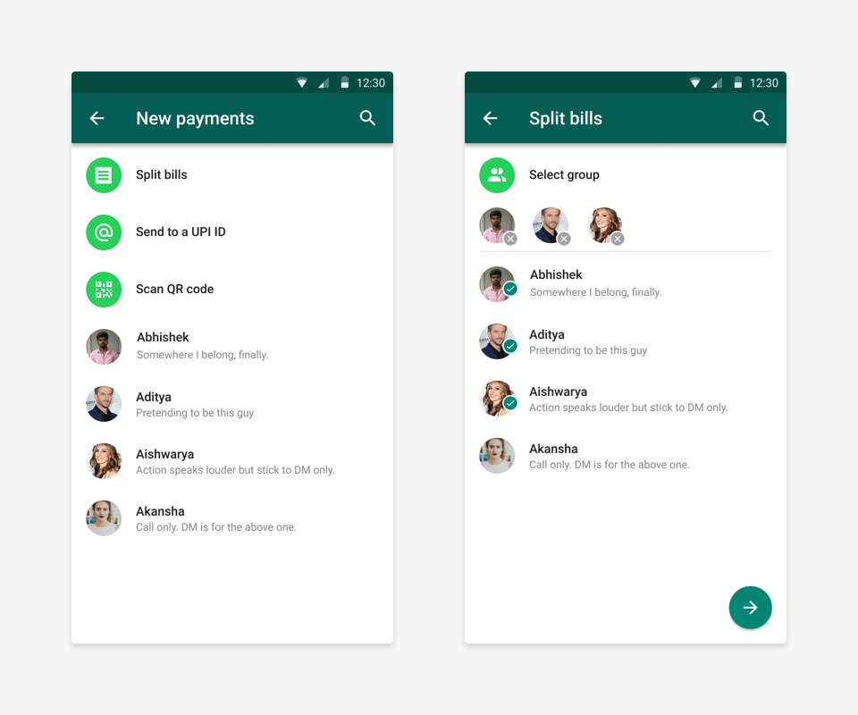
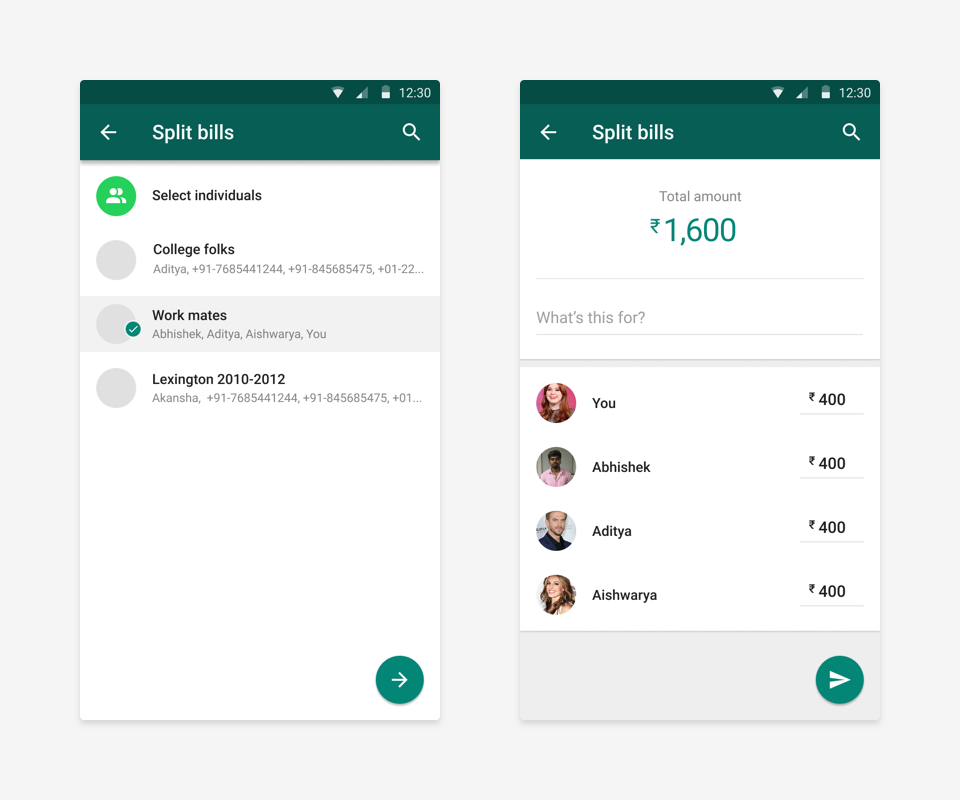
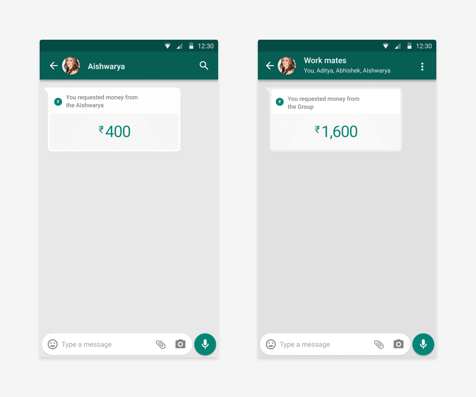
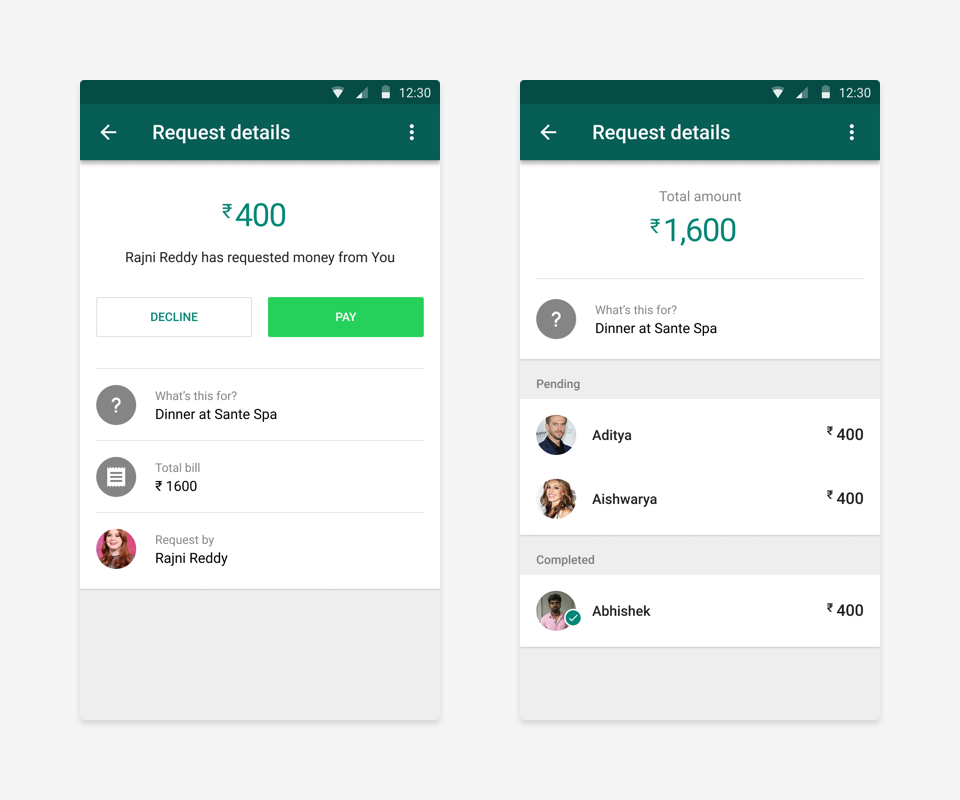

WhatsApp Pay is a beta feature of WhatsApp which utilizes UPI for accepting and requesting payments. In this project, I will explore a step further, splitting a payments amongst a group.
We have all experienced problems while splitting a bill after a night out with friends or colleagues. The hassle of manually splitting bills is clumsy and complicated. Although the payment option in WhatsApp already exists, it's much easier to split bills in a more organized and efficient way.
This can be done by allowing the spender to create a split bill and send a request over a group chat. Though you can send the request to an individual chat contact, it is much more systematic to send the request once to everyone at one place.
Current workflow for requesting payments
The research plan around this was to define personas, finding contacts matching these personas, and then interviewing them. The interviews were structured around three major questions:
For this design exercise, I was targeting people within the age group of 20 to 30. Young adults would be the ideal group to start off with because of they:
I found 5 people in my contact list who would fit into this segment with a background ranging from an Software Engineer to Environmentalist to a Doctor.
The interviews were scheduled and wrapped up in a day itself. The primary learnings from these were,
From these learnings, one of the top action items would be to focus more on building awareness around WhatsApp Pay. Upon further research, I learned WhatsApp Pay was not out public which explains the poor awareness among the crowd.
I would next look at how other apps were handling splitting bills. There were two popular products on the App Store: WeChat and Splitwise. WeChat does offer splitting bills by creating a group of people and then splitting the bill amongst that group. One of the participants has used this feature and mentioned this in the interview.
From the short research sprint, I realized that the larger problem is of awareness and ideally I’d set focus on solving that problem. For the project, we’d be assuming that awareness is not a problem and WhatsApp is as popular as other payment apps.
The primary problem we can solve with this feature inside WhatsApp Pay is - splitting bills and requesting later after the gathering is done. The designs are targeted towards use-cases for one time splitting and not long term use-cases, like, vacation or monthly household expenses.
The core principle is to be simple (as opposed to powerful feature) and being close to WhatsApp UX (obviously.)
For the first version of the feature, I wanted to include most use-cases whilst keeping the feature minimal and simple to use like the rest of app. Future features like reading bills from a picture would be very helpful, similar to this app on the Play Store.
While drawing this user flow I figured out that there could be possible 3 entry points for this feature.
These set of wireframes were to explore the sender's experience from a group. Here, the person who is spliting the bills is coming into the flows from the group.
As part of the WhatsApp platform, I ensured all the components used are from what WhatsApp used for the previous feature. For the UI design I used Figma and clubbed it with Protopie for interactions. This prototype was part of my learning roadmap.
Participants selection animation
👆 Everything starts from either Group's settings or inside Payment options. If users start from Payments, we show the contact list to pick from.
👆 Users can switch to the group list from the contact list. After picking participants, users add the total amount. We split the bill equally by default and allow users to customize portion for one and distribute equally amongst the rest.
The split bill message bubble could be part of direct message or group depending on what users select: group or individuals. A direct message would have only reader's share while group would have the total bill split amongst the group members.
Details for receivers and senders would be different. Receivers have buttons to pay their share and in order to complete that, they have information like, what's this bill for, who has requested for the share, and what was the total amount. On the other hand, senders have access to who have paid and who hasn't.
Adding a split bill feature to a payment is a plus but not an essential. As highlighted from the research that WhatsApp Pay has more awareness problems than engagement problems.